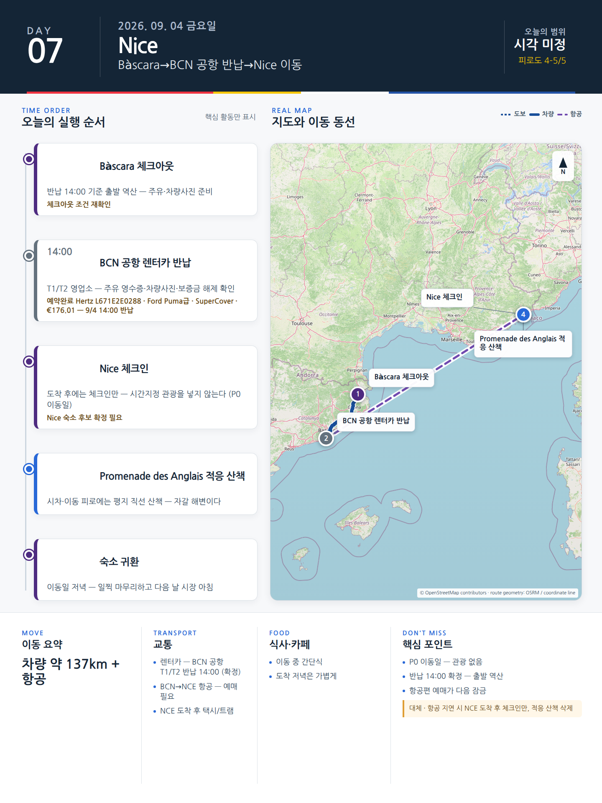

Day 7 · 9/4 금 · Nice
P0 연결거점 이동

카드의 지도영역은 일정 순서를 보여주는 개요이며 내비게이션이 아닙니다. 실제 도보·운전 경로는 Google Maps에서 다시 계산하세요.
시간표
Nice
| 상대시간 | 일정 | 실행 포인트 |
|---|---|---|
| 도착–+60분 | 공항 → 숙소 이동·체크인 | 도착터미널에 따라 Tram 2 또는 택시 |
| +60–+120분 | 짐 정리·근처 슈퍼 장보기 | 물, 요거트, 빵, 과일, 햄·치즈, 샐러드 |
| 일몰 전 45–60분 | Masséna·Jardin Albert 1er·Promenade | 방향만 익히고 장거리 도보는 피함 |
| 19:30 전후 | 가벼운 저녁 | 숙소권 캐주얼 식당 또는 숙소식 |
피로도
2/5
이 날의 메모
Nice
니스 도착, 체크인, Promenade 적응
지연 시 외식과 산책을 순서대로 삭제한다.
오늘 확인할 것
- 핵심 실행
- Girona→BCN 반납→항공→Nice
- 권장 출발
- 항공 기준 역산, Girona 최소 5시간 전 출발
- 완충
- 반납·셔틀·보안 180분 이상
- 최고 리스크
- 전체 여행 최고 연결리스크
- 우선 삭제
- Nice 적응산책
- 대체안
- NCE 도착 후 체크인만
- 식사·휴식
- 공항 간단식
- 잠금 필요
- 항공·반납·수하물·숙소